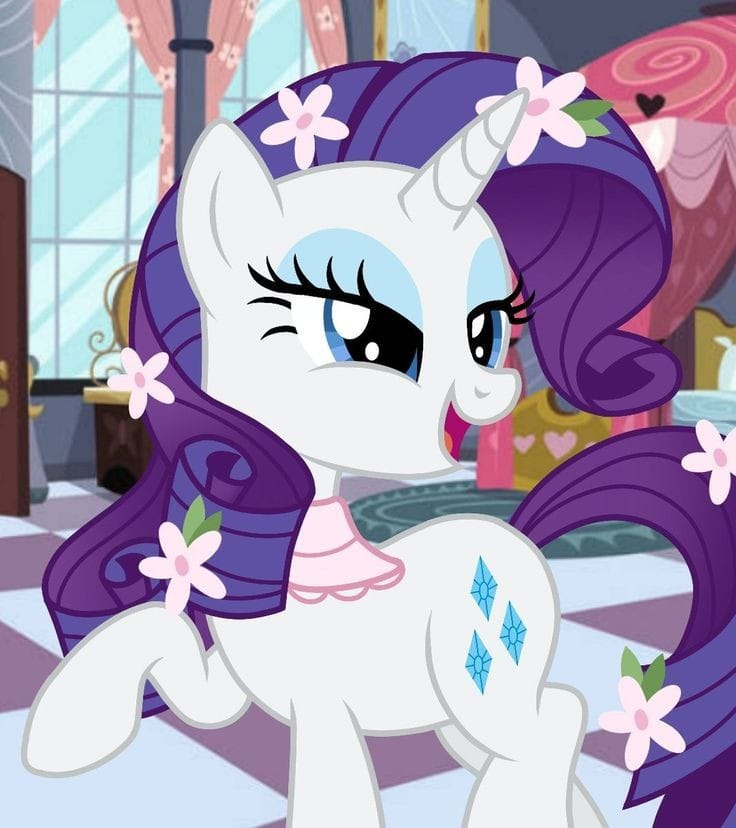
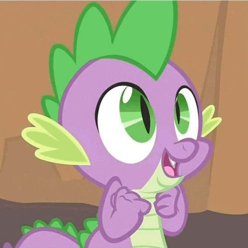
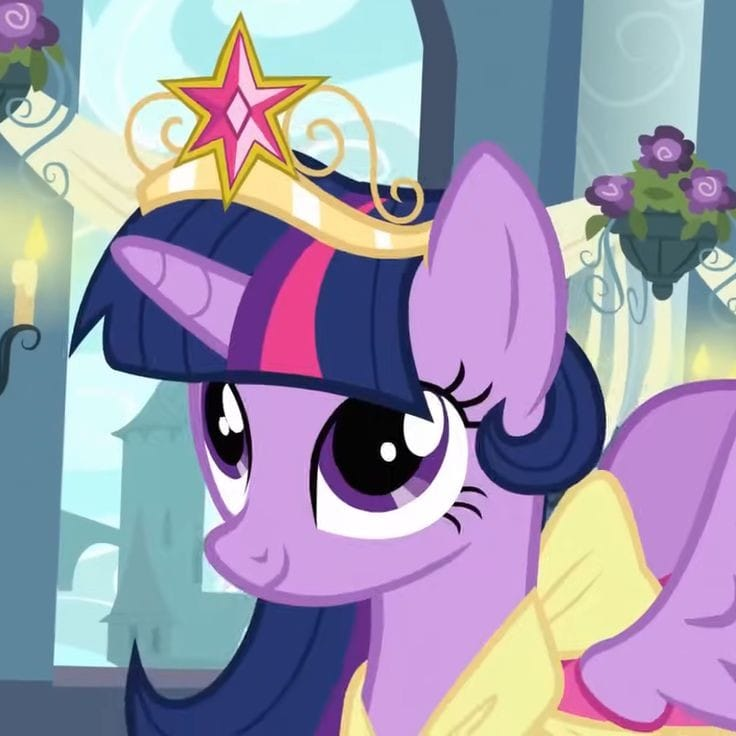
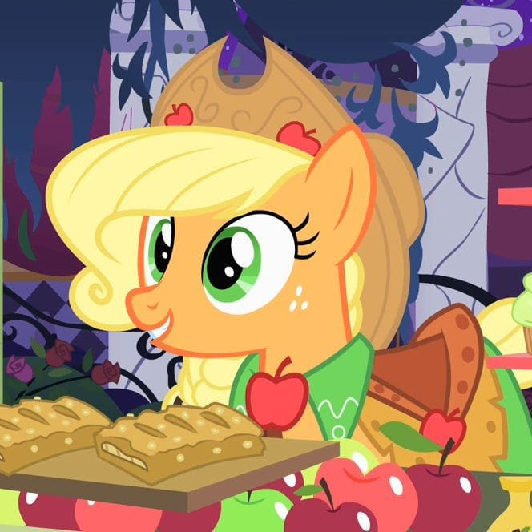
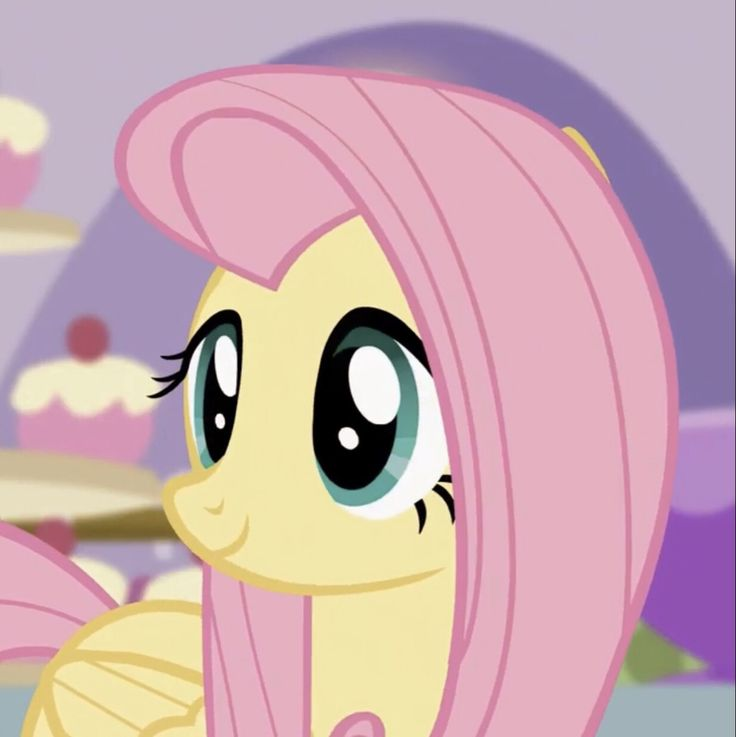
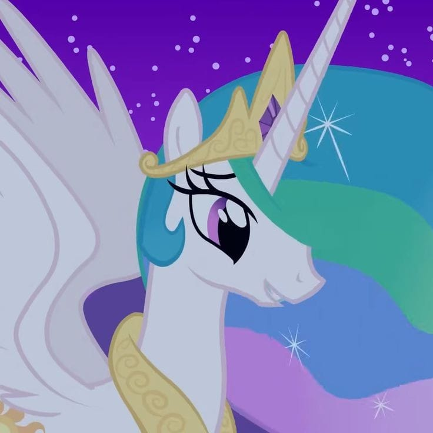

Rarity
- É uma pônei unicórnio branca glamurosa e de crina violeta;
- É uma amiga prestativa e encantadora;
- Ela é uma fashionista e um pônei de negócios, tendo uma franquia das principais lojas, além de operar um salão de lta-costura;
- Apesar de suas tendências vãs e melodramáticas, ela tem um espírito generoso e esforçado, muito atenciosa, especialmente para crianças.

Spike
- É um dragão bebê roxo com espinhos verdes, ficou órfão como um ovo e é criado entre a família de Twilight como seu irmão mais novo adotivo;
- Spike cumpre o papel de "assistente número um" de Twilight, ao qual ele é nomeado por sua lealdade e habilidade em ajudar Twilight a resolver problemas e aprender lições;
- Ele também é descrito como apaixonado por Rarity.

Twilight Sparkle
- É uma pônei unicórnio de cor lilás;
- O traço de caráter mais marcante de Twilight é sua humildade. Ela é uma estudante inteligente e respeitosa;
- Está sempre disposta a ajudar suas amigas e adora livros de magia;

Applejack
- É uma pônei terrestre bege alaranjado e de crina loira;
- Sua cutie mark representa seu talento para a agricultura e o amor por sua família. Ela é caracterizada como uma "garota da fazenda" que ostenta um chapéu de cowboy com um laço e fala com um sotaque caipira;
- Applejack é honesta, confiável, responsável e o mais "pé no chão" das Mane Six; ser uma amiga bem ajustada, razoável, otimista e com bom senso;

Fluttershy
- É uma pônei pégaso amarela e de crina lisa e rosa;
- É doce, amorosa e muito tímida. Sua crina é cor de rosa e seu corpo, amarelo;
- Sua cutie mark representa seu amor da natureza e talento como cuidador de animais;
- Fiel ao seu nome, ela é "definida por sua doçura tímida; voz suave e sussurrante; e natureza terna e estimulante.

Rainbow Dash
- É uma pônei pégaso azul celeste e de crinas arco-íris;
- É uma grande aventureira e adora viajar por terras desconhecidas;
- Sua cutie mark representa sua preparação atlética e obsessão com velocidade e aventura;
- Vendo a personagem como "egocêntrica e irresponsável".

Pinkie Pie
- É uma pônei terrestre rosa de crina ondulada e rosada;
- É a pônei mais alegre e animada da turma. Está sempre saltando e cantando pelas ruas de Equestria em busca de atividades divertidas;
- Um personagem cômico que foi criado em uma "fazenda de rocha", Pinkie é alegre, enérgica e faladora;
- Ela é definida por seu desejo de entreter seus amigos jogando festas aleatoriamente e agindo de forma bem alegre e divertida. mas ela tem medo de ser rejeitada por outros e ficar sozinha.

Princesa Celestia
- É uma pônei alicórnio e governante de Equestria;
- Além de sua responsabilidade de levantar o sol, ela também foi mentora de Twilight Sparkle, a quem muitas vezes se refere como "minha aluna mais fiel;
- Ela tem um fênix fêmea de estimação chamada Philomena;
- Apesar de ser da realeza, muitas vezes ela incentiva seus súditos a relaxar com piadas e perguntas gentis. Ela também mostra grande paciência com qualquer comportamento impróprio em sua direção.

Princesa Luna
- Ex-Nightmare Moon ou Lua do Pesadelo ( ela tem uma história de dificuldade em viver na sombra de sua irmã mais velha. Tão difícil, na verdade, seu ciúme a transformou na Nightmare Moon.), é uma pônei alicórnio e a irmã mais nova da Princesa Celestia;
- A aparência da Princesa Luna mudou após o primeiro episódio. O corpo dela é de um tom de azul mais escuro, sua crina é parcialmente translúcida, ondulanda e brilhante;
- "A irmã mais velha usava seus poderes de unicórnio para erguer o sol aos céus e a mais nova trazia a lua para iniciar a noite";
- Ela exibe bondade e oferece conselhos sábios.